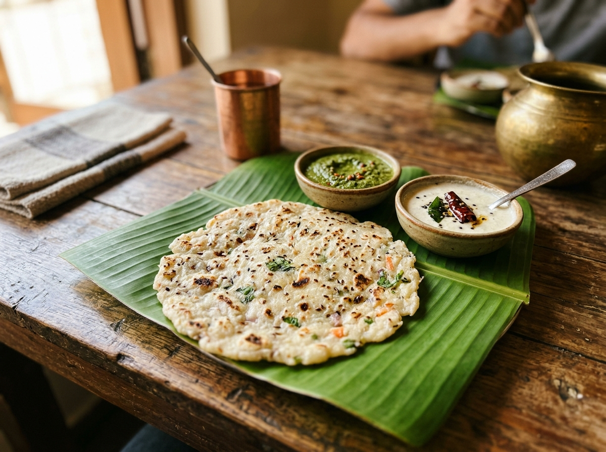
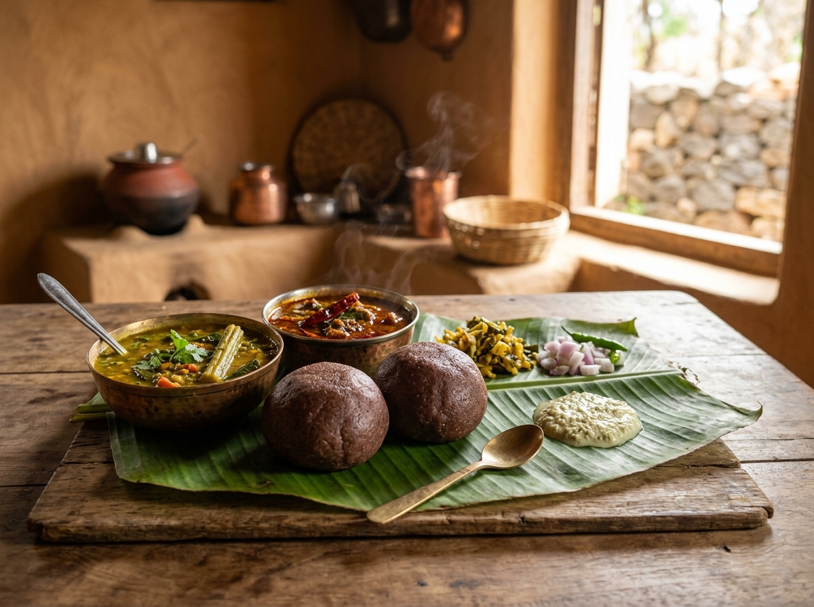
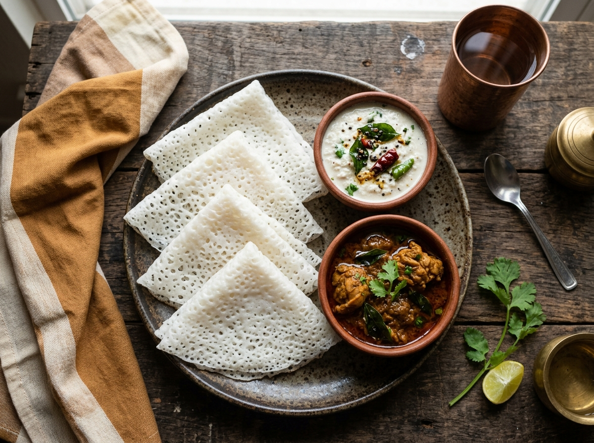
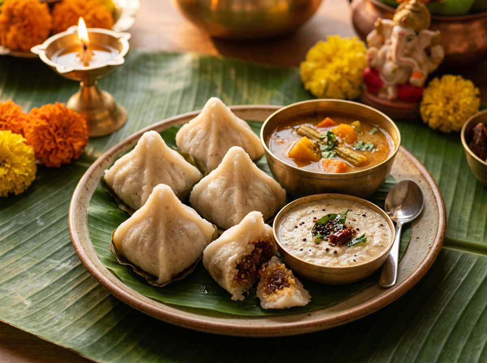
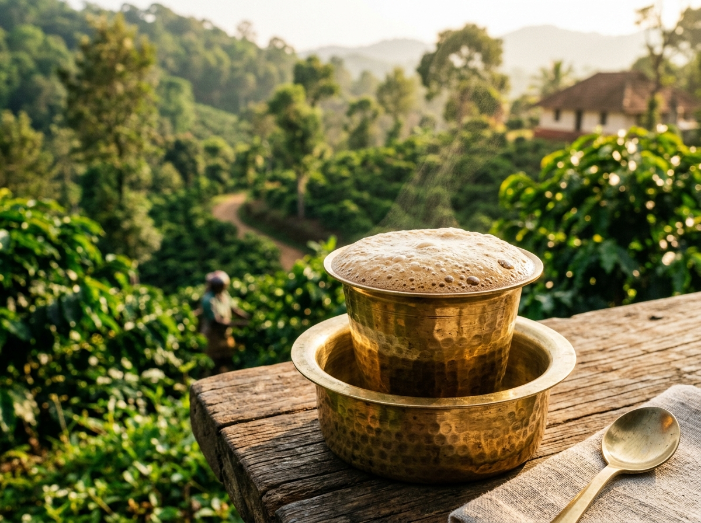
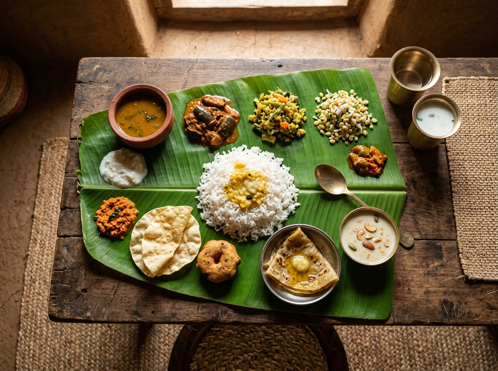

Akki Roti is a traditional Karnataka dish made using rice flour. It is commonly enjoyed with chutney and curry.

Ragi Mudde is a traditional Karnataka food made using ragi flour. It is usually served with sambar or spicy curry.

Neer Dosa is a soft and thin rice-based dosa. It is commonly served with coconut chutney or curry.

Kadubu is a traditional Karnataka dish prepared using rice and other ingredients. It is enjoyed with chutney or curry.

South Indian Filter Coffee is a popular beverage in Karnataka. It is made using coffee, milk and sugar. Sakleshpur is surrounded by coffee plantations, making this coffee very special.

Sakleshpur is known for traditional homemade food prepared with fresh local ingredients.
Sakleshpur is surrounded by the beautiful Western Ghats and is known for its greenery, coffee plantations and local cuisine.
The coffee grown in Sakleshpur is famous across Karnataka and is used to make the best South Indian Filter Coffee.
© 2026 Sakleshpur Explorer